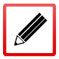

完成设备安装后，需进行安装后检查，检查事项如下：
ü请检查设备周围是否留有足够的散热空间，机柜是否稳固
ü检查电源线所接电源与设备要求的电源是否一致
ü检查设备的保护地线是否连接正确
ü检查设备与配置终端等其它设备的连接关系是否正确
|
²设备安装完成后的检查非常重要，因为安装的牢固与否、接地良好与否、电源要求匹配与否等都将直接关系到设备的正常使用。 |

检查完成后，即可进行通电和使用。在设备工作过程中，用户可以根据设备面板上的指示灯来判断设备的工作状态，各个指示灯标志的设备工作情况如下图所示。
指示灯名称 |
指示灯状态描述 |
|---|---|
工作灯（Run） |
绿色灯。当设备正常运行时，工作灯处于闪烁状态。 |
主从灯（M/S） |
黄色灯。双机热备功能未启用时，主从灯处于熄灭状态。启用该功能后，主从灯处于点亮状态代表这台设备处于工作模式；反之，如果主从灯处于熄灭状态，则设备工作在备份模式。 说明： 部分型号的设备没有“主从灯”。 |
管理灯（MGMT） |
黄色灯。当网络管理员登录设备时，管理灯处于点亮状态。 |
日志灯（Log） |
黄色灯。设备生成日志时，该灯会闪烁。 |
 |
²NGFW部分型号硬件设备支持双电源输入，如果只安装了一个电源模块或者其中一个电源模块故障，设备开启时会产生蜂鸣告警声音；此时若确认电源未发生故障，可以按下电源模块旁边的红色按钮，关闭告警声音。 |